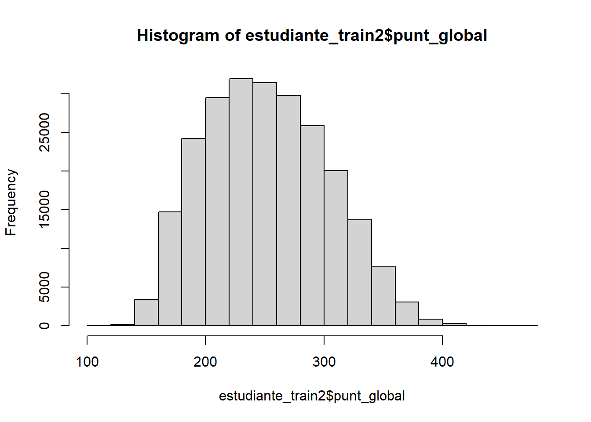

# Datos de ejemplo
x <- c(5, 7, 8, 9, 10)
mean(x)[1] 7.8Bioestadística Fundamental y Estadística Fundamental para las Ciencias de la Salud
En este módulo se espera introducir al estudiante a una filosofía de razonamiento estadístico a través de la cual adquirirá los principios del pensamiento científico respecto a la descripción organizada de los datos, realizando una traducción de un conjunto de datos en información y hallazgos divulgables por medio de técnicas de potencialización del uso de gráficos y obtención de índices. Se presentarán los diferentes índices o estadísticos junto a su respectiva descripción, fórmula teórica, implementación en R e interpretación, destacando la importancia de que si bien este material es aplicado y práctico, resulta inservible de no comprender que más allá del correcto y ético cálculo de estas medidas, el cumplimiento de los supuestos requeridos y la interpretación es vital, así como el entendimiento del contexto y de la naturaleza de la distribución de nuestros datos.
El módulo se centra tanto en el cálculo numérico como en la exploración visual, permitiendo que el estudiante desarrolle una mirada crítica sobre las diferentes maneras de representar la información. A lo largo de este espacio se abordarán medidas de tendencia central, medidas robustas y resistentes a valores atípicos, medidas de posición o localización, medidas de dispersión, medidas de forma (asimetría y curtosis) y medidas de asociación entre dos variables. Paralelamente, se explorará el papel de la visualización gráfica en la comprensión de los datos, destacando cómo los gráficos complementan y refuerzan los análisis numéricos, y cómo las herramientas de R permiten generar representaciones versátiles, reproducibles y adaptables a diferentes contextos.
Con ello, se busca que el estudiante logre no solo manipular adecuadamente datos en R, sino también construir narrativas estadísticas fundamentadas en evidencia, con capacidad de comunicar hallazgos de manera clara, precisa y ética en entornos científicos y profesionales.
Descripción:
La media aritmética es el promedio de un conjunto de datos. Se obtiene sumando todos los valores y dividiendo entre el número total de observaciones.
Fórmula
\[ \bar{x} = \frac{1}{n} \sum_{i=1}^{n} x_i \]
donde \(n\) es el número de observaciones y \(x_i\) cada valor de la variable.
Implementación en R
# Datos de ejemplo
x <- c(5, 7, 8, 9, 10)
mean(x)[1] 7.8Interpretación
La media aritmética indica el valor central promedio de los datos. Es sensible a valores extremos
Descripción:
Promedio que asigna un peso a cada observación para reflejar su importancia relativa.
Fórmula \[ \bar{x}_p = \frac{\sum_{i=1}^{n} w_i x_i}{\sum_{i=1}^{n} w_i} \] Implementación en R
x <- c(3, 5, 7)
w <- c(1, 2, 3)
weighted.mean(x, w, na.rm = TRUE)[1] 5.666667Interpretación
Promedio ajustado por importancia; útil en calificaciones, índices y agregación de indicadores.
Descripción:
Valor central de los datos ordenados; divide la muestra en dos mitades del mismo tamaño. Es robusta frente a valores atípicos.
Fórmula \[ \tilde{x} = \begin{cases} x_{(\frac{n+1}{2})}, & \text{si } n \text{ es impar} \\ \dfrac{x_{(\frac{n}{2})} + x_{(\frac{n}{2}+1)}}{2}, & \text{si } n \text{ es par} \end{cases} \] Implementación en R
x <- c(1, 3, 5, 7, 9, 11)
median(x, na.rm = TRUE)[1] 6Interpretación
La mitad de las observaciones está por debajo y la otra mitad por encima de la mediana.
Descripción:
Valor (o valores) más frecuente(s) en el conjunto de datos. Puede no ser única (bimodal/multimodal) o no existir en datos continuos sin discretización.
Fórmula \[ \text{Moda} = \arg\max_{v} \; f(v) \] donde \(f(v)\) es la frecuencia del valor \(v\).
Implementación en R
mode_all <- function(v) {
v <- v[!is.na(v)]
if (length(v) == 0) return(NA)
tab <- table(v)
tab <- tab[tab == max(tab)]
as.vector(names(tab))
}
x <- c(2, 3, 3, 4, 4, 4, 5, NA)
mode_all(x)[1] "4"Interpretación
Indica el(los) valor(es) más común(es). Útil para variables categóricas.
Descripción:
Promedio multiplicativo; apropiada para tasas de crecimiento, razones y datos en escala logarítmica. Requiere valores positivos.
Fórmula
\[ \bar{x}_g = \left( \prod_{i=1}^{n} x_i \right)^{\frac{1}{n}} = \exp\!\left( \frac{1}{n} \sum_{i=1}^{n} \ln x_i \right) \] Implementación en R
x <- c(1.2, 1.5, 0.9, 1.1) # todos > 0
exp(mean(log(x), na.rm = TRUE))[1] 1.155386Interpretación
Resume promedios de cambios relativos; menos afectada por valores grandes que la media aritmética.
Descripción:
Recíproco del promedio de los recíprocos; adecuada para promediar tasas (p. ej., velocidad promedio en tramos iguales).
Fórmula
\[ \bar{x}_h = \frac{n}{\sum_{i=1}^{n} \frac{1}{x_i}} \] Implementación en R
x <- c(40, 60, 80) # velocidades, tasas > 0
length(x) / sum(1/x)[1] 55.38462Interpretación
Da mayor peso a valores pequeños; útil cuando la cantidad fija está en el denominador (tiempo por unidad, costo por unidad).
Descripción:
Promedio simple de \(Q_1\), \(Q_2\) (mediana) y \(Q_3\); combina posición central y dispersión central.
Fórmula \[ \bar{x}_{Q} = \frac{Q_1 + Q_2 + Q_3}{3} \] Implementación en R
x <- c(1,2,3,4,5,6,7,8,9,10)
qs <- quantile(x, probs = c(0.25, 0.5, 0.75), na.rm = TRUE)
mean(qs)[1] 5.5Interpretación
Medida robusta de tendencia central que considera el comportamiento del 50% central de los datos.
Descripción:
Promedio ponderado de (Q_1), mediana ((Q_2)) y (Q_3), con doble peso a la mediana.
Fórmula
\[ \text{Trimedia} = \frac{Q_1 + 2Q_2 + Q_3}{4} \]
Implementación en R
x <- c(1,2,3,4,5,6,7,8,9,10)
qs <- quantile(x, probs = c(0.25, 0.5, 0.75), na.rm = TRUE)
(qs[1] + 2*qs[2] + qs[3]) / 425%
5.5 Interpretación
Equilibra robustez (mediana) y distribución intermedia (\(Q_1\), \(Q_3\)); útil con asimetrías moderadas.
Descripción:
Promedio de \(Q_1\) y \(Q_3\); resume el centro del rango intercuartílico (IQR), ignorando colas.
Fórmula
\[ \text{Centrimedia} = \frac{Q_1 + Q_3}{2} \] Implementación en R
x <- c(1,2,3,4,5,6,7,8,9,10)
qs <- quantile(x, probs = c(0.25, 0.75), na.rm = TRUE)
mean(qs)[1] 5.5Interpretación
Mide el “centro” del 50% medio de los datos, con poca influencia de valores extremos.
Descripción:
Los percentiles dividen un conjunto de datos ordenados en 100 partes iguales. Cada percentil indica el valor debajo del cual se encuentra un porcentaje dado de las observaciones.
Fórmula
\[P_k = \text{valor de la variable tal que } k\% \text{ de las observaciones son menores o iguales}\]
Implementación en R
datos <- c(4, 7, 10, 15, 20)
percentil_25 <- quantile(datos, probs = 0.25)
percentil_2525%
7 Interpretación
Un percentil indica la posición relativa de un dato dentro de la distribución. Por ejemplo, el percentil 25 indica el valor por debajo del cual se encuentra el 25% de los datos.
Descripción:
Los deciles dividen un conjunto de datos ordenados en 10 partes iguales.
Fórmula \[D_j = \text{valor de la variable tal que } \dfrac{j}{10} \text{ de las observaciones son menores o iguales}\] Implementación en R
datos <- c(4, 7, 10, 15, 20)
deciles <- quantile(datos, probs = seq(0.1, 0.9, by = 0.1))
deciles 10% 20% 30% 40% 50% 60% 70% 80% 90%
5.2 6.4 7.6 8.8 10.0 12.0 14.0 16.0 18.0 Interpretación
Los deciles permiten identificar la posición de los datos en intervalos del 10%. Por ejemplo, el decil 4 corresponde al valor debajo del cual está el 40% de los datos.
Descripción:
Los cuartiles dividen un conjunto de datos ordenados en 4 partes iguales de acuerdo con una probabilidad predefinida.
Fórmula \[Q_k = x_{\left( \frac{k(n+1)}{4} \right)}, \quad k=1,2,3\]
Implementación en R
datos <- c(4, 7, 10, 15, 20)
cuartiles <- quantile(datos, probs = c(0.25, 0.5, 0.75))
cuartiles25% 50% 75%
7 10 15 Interpretación
Los cuartiles permiten identificar cómo se distribuyen los datos y ayudan a detectar la dispersión. - Q1 indica el valor que deja por debajo el 25% de los datos. - Q2 (la mediana) divide los datos en dos partes iguales. - Q3 deja por debajo el 75% de los datos. Estos valores son útiles para construir diagramas de caja (boxplots) y analizar la simetría o la presencia de valores atípicos en la distribución
Descripción:
El rango es la diferencia entre el valor máximo y el valor mínimo de un conjunto de datos.
Fórmula \[ R = X_{\max} - X_{\min} \]
Implementación en R
datos <- c(4, 7, 10, 15, 20)
rango <- max(datos) - min(datos)
rango[1] 16Interpretación
El rango indica la amplitud total de los datos, es decir, qué tan dispersos están entre el valor más bajo y el más alto.
Descripción:
El rango intercuartílico (RIC) es la diferencia entre el tercer cuartil (\(Q_3\)) y el primer cuartil (\(Q_1\)). Mide la dispersión de los datos centrales (el 50% intermedio), eliminando la influencia de valores extremos o atípicos.
Fórmula
\[ RIC = Q_3 - Q_1 \]
Implementación en R
datos <- c(4, 7, 10, 15, 20, 22, 25, 30, 35, 40)
cuartiles <- quantile(datos, probs = c(0.25, 0.75))
RIC <- cuartiles[2] - cuartiles[1]
RIC 75%
17.5 Interpretación
El rango intercuartílico muestra la amplitud donde se encuentra la mitad central de los datos. Un RIC pequeño indica que los datos centrales están muy agrupados, mientras que un RIC grande refleja mayor dispersión en la zona central. Además, es una medida robusta porque no se ve afectada por valores extremos.
Descripción:
La mediana de las desviaciones absolutas (MAD) mide la dispersión de los datos alrededor de la mediana. Es una medida robusta, poco sensible a valores atípicos.
Fórmula
\[ MAD = \text{mediana} \left( \, |X_i - \text{mediana}(X)| \, \right) \]
Implementación en R
datos <- c(4, 7, 10, 15, 20)
mad_value <- mad(datos, constant = 1) # sin factor de corrección
mad_value[1] 5Interpretación
El MAD refleja la variabilidad típica respecto a la mediana. Si el MAD es bajo, los datos están muy concentrados cerca de la mediana; si es alto, los datos están más dispersos.
Descripción:
La desviación estándar mide la dispersión promedio de los datos respecto a la media. Es la medida de variabilidad más usada en estadística clásica.
Fórmula
\[ s = \sqrt{\frac{1}{n-1} \sum_{i=1}^{n} (x_i - \bar{x})^2} \] Implementación en R
datos <- c(4, 7, 10, 15, 20)
desv_est <- sd(datos)
desv_est[1] 6.379655Interpretación
Un valor alto de desviación estándar indica que los datos están muy dispersos respecto a la media, mientras que un valor bajo indica mayor concentración alrededor de ella.
Descripción:
La varianza es la medida de dispersión que indica el promedio de los cuadrados de las desviaciones respecto a la media.
Fórmula
\[ s^2 = \frac{1}{n-1} \sum_{i=1}^{n} (x_i - \bar{x})^2 \]
Implementación en R
datos <- c(4, 7, 10, 15, 20)
varianza <- var(datos)
varianza[1] 40.7Interpretación
La varianza expresa la dispersión en unidades cuadradas de la variable. Es útil en cálculos estadísticos posteriores, aunque menos interpretable directamente que la desviación estándar.
Descripción:
La estandarización transforma los datos para que tengan media cero y desviación estándar uno, permitiendo comparaciones entre variables en diferentes escalas.
Fórmula
\[ z_i = \dfrac{x_i - \bar{x}}{s} \]
Implementación en R
datos <- c(4, 7, 10, 15, 20)
datos_estandarizados <- scale(datos)
datos_estandarizados [,1]
[1,] -1.1285876
[2,] -0.6583428
[3,] -0.1880979
[4,] 0.5956435
[5,] 1.3793849
attr(,"scaled:center")
[1] 11.2
attr(,"scaled:scale")
[1] 6.379655Interpretación
Los valores estandarizados (z-scores) indican cuántas desviaciones estándar se encuentra cada dato por encima o debajo de la media.
Descripción:
El coeficiente de variación (CV) mide la dispersión relativa dividiendo la desviación estándar entre la media. Es útil para comparar la variabilidad entre diferentes conjuntos de datos con medias distintas.
Fórmula
\[ CV = \dfrac{s}{\bar{x}} \times 100\% \]
Implementación en R
datos <- c(4, 7, 10, 15, 20)
cv <- sd(datos) / mean(datos) * 100
cv[1] 56.96121Interpretación
Un CV bajo indica que la variabilidad relativa respecto a la media es pequeña; un CV alto indica mayor dispersión en relación al promedio de los datos.
Descripción:
Mide la asimetría de una distribución a partir de la diferencia entre la media y la moda o mediana.
Fórmula
\[ A_p = \frac{\bar{x} - \text{Mo}}{s} \quad \text{o bien} \quad A_p = \frac{3(\bar{x} - \text{Me})}{s} \]
Implementación en R
pearson_skewness <- function(x) {
(mean(x) - median(x)) / sd(x) * 3
}Interpretación
Descripción:
Mide la asimetría basándose en el tercer momento estandarizado de la distribución.
Fórmula
\[ g_1 = \frac{\frac{1}{n}\sum_{i=1}^{n}(x_i - \bar{x})^3}{s^3} \]
Implementación en R
library(e1071)
skewness(x, type = 1) # Fisher[1] 0Interpretación
Descripción:
Mide la asimetría a partir de los cuartiles de la distribución.
Fórmula
\[ A_{YB} = \frac{(Q_3 + Q_1 - 2Q_2)}{Q_3 - Q_1} \]
Implementación en R
yule_bowley <- function(x) {
qs <- quantile(x, probs = c(0.25, 0.5, 0.75))
(qs[3] + qs[1] - 2*qs[2]) / (qs[3] - qs[1])
}Interpretación
Descripción:
Basado en deciles, mide la asimetría comparando la distancia de la mediana a los percentiles extremos.
Fórmula
\[ A_K = \frac{(P_{90} + P_{10} - 2P_{50})}{P_{90} - P_{10}} \]
Implementación en R
kelly_index <- function(x) {
ps <- quantile(x, probs = c(0.1, 0.5, 0.9))
(ps[3] + ps[1] - 2*ps[2]) / (ps[3] - ps[1])
}Interpretación
Descripción:
La curtosis mide el grado de concentración de los datos en torno a la media. El coeficiente de apuntamiento de Fisher compara la forma de la distribución con la distribución normal.
Curtosis positiva (leptocúrtica): la distribución tiene colas más pesadas y mayor concentración en la media que la normal.
Curtosis cero (mesocúrtica): la distribución tiene una forma similar a la normal.
Curtosis negativa (platicúrtica): la distribución tiene colas más ligeras y menos concentración en la media que la normal.
Fórmula
\[ g_2 = \frac{\frac{1}{n} \sum_{i=1}^n (x_i - \bar{x})^4}{\left( \frac{1}{n} \sum_{i=1}^n (x_i - \bar{x})^2 \right)^2} - 3 \]
Implementación en R
# Paquete necesario
if (!require(moments)) install.packages("moments")Cargando paquete requerido: moments
Adjuntando el paquete: 'moments'The following objects are masked from 'package:e1071':
kurtosis, moment, skewnesslibrary(moments)
datos <- c(4, 7, 10, 15, 20)
kurtosis(datos) # por defecto ya usa la definición de Fisher (resta 3)[1] 1.736748Interpretación
Si g2 > 0: los datos son leptocúrticos (más pico y colas pesadas que la normal).
Si g2 = 0: los datos son mesocúrticos (similar a la normal).
Si g2 < 0: los datos son platicúrticos (menos pico y colas más ligeras).
Descripción:
La covarianza mide el grado de variación conjunta de dos variables. Indica si tienden a aumentar o disminuir juntas, pero su valor depende de las unidades de medida, lo que dificulta su comparación entre estudios.
Fórmula
\[ \text{Cov}(X,Y) = \frac{1}{n} \sum_{i=1}^n (x_i - \bar{x})(y_i - \bar{y}) \]
Implementación en R
x <- c(4, 7, 10, 15, 20)
y <- c(3, 6, 9, 12, 18)
cov(x, y)[1] 36.6Interpretación
Descripción:
Mide la fuerza y dirección de la relación lineal entre dos variables cuantitativas. A diferencia de la covarianza, está normalizado entre -1 y 1.
Fórmula
\[ r_{xy} = \frac{\text{Cov}(X,Y)}{\sigma_X \, \sigma_Y} \]
Implementación en R
cor(x, y, method = "pearson")[1] 0.9941725Interpretación
Descripción:
Es una medida no paramétrica de asociación basada en los rangos de los datos. Evalúa la relación monótona (creciente o decreciente), sin requerir linealidad ni normalidad.
Fórmula
\[ \rho = 1 - \frac{6 \sum d_i^2}{n(n^2 - 1)} \]
Implementación en R
cor(x, y, method = "spearman")[1] 1Interpretación
Descripción:
Mide la concordancia entre pares de observaciones. Es más robusto que Spearman cuando hay empates.
Fórmula
\[ \tau = \frac{(N_c - N_d)}{\frac{1}{2}n(n-1)} \]
Implementación en R
cor(x, y, method = “kendall”)
Interpretación
Correlation does not imply causation Spurious relationship \(\neq\) Causal Relationship (https://tylervigen.com/spurious-correlations)
Descripción:
Mide la desigualdad o concentración en una distribución. Aunque es más común en economía (para medir desigualdad de ingresos), también se aplica a la concentración de cualquier variable.
Fórmula
\[ G = \frac{\sum_{i=1}^n \sum_{j=1}^n |x_i - x_j|}{2n^2 \bar{x}} \]
Implementación en R
if (!require(ineq)) install.packages("ineq")Cargando paquete requerido: ineqlibrary(ineq)
Gini(x)[1] 0.2857143Interpretación
Data Viz Project - Copenhagen, Denmark.
Data Viz Project es la biblioteca más grande del mundo de visualizaciones de datos. Reúne más de 160 tipos de visualizaciones (y sigue creciendo), cada una con su definición, taxonomía y ejemplos, lo que la convierte en la colección más completa para encontrar la visualización adecuada e inspirarse.
No está dirigido únicamente a analistas de datos, diseñadores gráficos o usuarios avanzados de hojas de cálculo, sino que busca ser un recurso de valor e inspiración para cualquier persona que necesite representar datos y explorar nuevas formas de hacerlo: estudiantes, investigadores, periodistas, diseñadores u otros profesionales.
The R Graph Gallery - Montpellier, France.
R Graph Gallery es una colección de gráficos creados con el lenguaje de programación R. Presenta cientos de gráficos organizados en secciones, siempre acompañados de su código reproducible. La galería pone especial énfasis en el uso de tidyverse y ggplot2.
Con más de 400 ejemplos clasificados en cerca de 50 tipos de gráficos siguiendo la taxonomía de data-to-viz, constituye la compilación más completa de gráficos en R disponible en la web. Cada ejemplo incluye tanto el código como una explicación detallada de su funcionamiento.
Cada tipo de gráfico comienza con un tutorial introductorio que explica su estructura y propósito. Una vez comprendidos los fundamentos, se ofrecen guías paso a paso con personalizaciones básicas, para lograr gráficos que no solo representen los datos de manera efectiva, sino que también se adapten a las necesidades específicas de cada usuario.
from Data to Viz - Montpellier, France.

Descargar el poster del árbol de decisión
From Data to Viz es una clasificación de tipos de gráficos basada en el formato de los datos de entrada. Se presenta como un árbol de decisiones que conduce a un conjunto de visualizaciones potencialmente adecuadas para representar un conjunto de datos.
El proyecto se apoya en dos ideas principales:
La mayoría de los análisis de datos pueden resumirse en unos veinte formatos de dataset.
Tanto los datos como el contexto determinan el gráfico más apropiado.
La metodología consiste en identificar y probar los tipos de gráficos viables para encontrar el que mejor se ajuste a los datos y al propósito del análisis. Una vez definido este conjunto, la web data-to-viz.com orienta hacia la mejor elección, advierte sobre errores comunes y siempre ofrece un fragmento de código reproducible en R.
Aunque el mundo de la visualización de datos es vasto e inagotable, este proyecto busca ser un punto de partida sólido para quienes necesitan elegir y aplicar gráficos de forma adecuada.
Utilizaremos un conjunto de datos con información relacionada a registros de estudiantes que presentaron el examen ICFES en el segundo periodo académico del año 2022. Descargar Base de Datos
estudiante_train2 <- readRDS("D:/Usuario/Escritorio/Quarto Pubs Applied BioStats/Módulo 4 - Estadística Descriptiva Exploratoria/estudiante_train2.rds")Histograma
hist(estudiante_train2$punt_global)
Box-plot o Diagrama de Cajas y Bigotes
boxplot(estudiante_train2$punt_global)Pie chart o Diagrama de Pastel
library(ggrepel)Warning: package 'ggrepel' was built under R version 4.4.3Cargando paquete requerido: ggplot2library(dplyr)
Adjuntando el paquete: 'dplyr'The following objects are masked from 'package:stats':
filter, lagThe following objects are masked from 'package:base':
intersect, setdiff, setequal, unionlibrary(ggplot2)
# Paleta profesional
paleta_profesional <- c(
"Navy" = "#1D3557",
"Steel" = "#457B9D",
"AccentBlue" = "#A8DADC",
"ForestGreen" = "#2A9D8F"
)
### Variable fami_numlibros ----
fami_numlibros <- estudiante_train2$fami_numlibros
# Extraer y resumir variable
datos_num_libros <- estudiante_train2 |>
count(categoria = fami_numlibros) |>
mutate(
fraccion = n / sum(n),
porcentaje = round(fraccion * 100, 1),
etiqueta = paste0(porcentaje, "%")
) |>
arrange(desc(fraccion)) |>
mutate(
categoria = factor(categoria, levels = categoria),
pos = cumsum(fraccion) - fraccion/2 # posición acumulada para etiquetas
)
# Total de observaciones
total_estudiantes <- 236487
# Colores
colores_libros <- setNames(
paleta_profesional[c("Navy", "Steel", "AccentBlue", "ForestGreen")],
levels(datos_num_libros$categoria)
)
# Gráfico de dona moderna corregido
plot_num_libros_dona <- ggplot(datos_num_libros, aes(x = 2, y = fraccion, fill = categoria)) +
geom_col(color = "white", width = 1, show.legend = TRUE) +
coord_polar(theta = "y") +
xlim(c(0.5, 2.8)) + # Aumentado el límite superior para acomodar etiquetas
geom_text_repel(
aes(y = pos, label = etiqueta),
nudge_x = 0.3, # Reducido el nudge para mantener etiquetas dentro del área
direction = "y", # Forzar dirección vertical
segment.size = 0.6,
segment.color = "gray30",
color = "black",
size = 4.5,
fontface = "bold",
family = "serif",
show.legend = FALSE,
max.overlaps = Inf # Permitir todas las etiquetas
) +
annotate("text", x = 0, y = 0,
label = paste0("Total\n", format(total_estudiantes, big.mark = ",")),
family = "serif",
fontface = "bold",
size = 6,
lineheight = 1.1,
color = "#333333") +
scale_fill_manual(values = colores_libros) +
labs(
title = "Distribución del Número de Libros en el Hogar",
subtitle = "Proporción de estudiantes según el número estimado de libros en casa"
) +
theme_void(base_size = 14) +
theme(
plot.title = element_text(size = 16, face = "bold", family = "serif", hjust = 0.5),
plot.subtitle = element_text(size = 13, family = "serif", hjust = 0.5, color = "gray30"),
legend.title = element_blank(),
legend.text = element_text(family = "serif", size = 12),
plot.background = element_rect(fill = "white", color = NA),
legend.position = "bottom"
)
plot_num_libros_donaWarning: Removed 1 row containing missing values or values outside the scale range
(`geom_text()`).Gráfico de Barra Apicalada
### Variable fami_educacionmadre ----
fami_educacionmadre <- estudiante_train2$fami_educacionmadre
table(fami_educacionmadre)fami_educacionmadre
0 1
201621 34866 # Datos Originales
datos_edu_madre <- data.frame(
categoria = c("Sin Educación Superior", "Con Educación Superior"),
valor = c(201621, 34866)
)
# Prepare data
datos_edu_madre <- datos_edu_madre %>%
mutate(
fraccion = valor / sum(valor),
porcentaje = round(fraccion * 100, 1),
etiqueta = paste0(porcentaje, "%")
)
# Define color palette (colorblind-friendly, elegant)
colores <- c("Sin Educación Superior" = "#ADB5BD",
"Con Educación Superior" = "#1D3557")
# Plot: 100% Stacked Bar Chart
plot_edu_madres <- ggplot(datos_edu_madre, aes(x = "Educación de las Madres", y = fraccion, fill = categoria)) +
geom_bar(stat = "identity", width = 0.5, color = "white") +
geom_text(aes(label = etiqueta),
position = position_stack(vjust = 0.5),
color = "white", size = 5, fontface = "bold") +
scale_fill_manual(values = colores) +
scale_y_continuous(labels = scales::percent_format(accuracy = 1)) +
coord_flip() +
labs(
title = "Distribución de la Educación Superior en las Madres",
subtitle = "Proporción de madres con y sin educación superior",
x = NULL, y = NULL, fill = NULL
) +
theme_minimal(base_size = 14) +
theme(
plot.title = element_text(size = 16, face = "bold", family = "serif", hjust = 0.5),
plot.subtitle = element_text(size = 13, family = "serif", hjust = 0.5, color = "gray30"),
axis.text = element_blank(),
axis.ticks = element_blank(),
panel.grid = element_blank(),
legend.position = "bottom",
legend.text = element_text(size = 12, family = "serif"),
plot.background = element_rect(fill = "white", color = NA)
)
#ggsave(plot_edu_madres,
# filename = "plot_edu_madres.pdf", # Para guardar el gráfico generado.
# device = "pdf")
plot_edu_madresGráfico de Barras
### Variable fami_estratovivienda ----
# Extraer y resumir variable
fami_estratovivienda <- estudiante_train2 %>%
count(categoria = fami_estratovivienda) %>%
mutate(
fraccion = n / sum(n),
porcentaje = round(fraccion * 100, 1),
etiqueta = paste0(porcentaje, "%")
) %>%
mutate(
categoria = factor(categoria, levels = categoria) # establecer niveles en ese orden
)
# Color palette for 4 categories (from your `paleta_profesional`)
colores_estratos <- setNames(
paleta_profesional[c(
"Navy", "Steel", "AccentBlue", "ForestGreen",
"Amber", "Beige", "MediumGray"
)],
levels(fami_estratovivienda$categoria)
)
# Plot
# Configuración esencial del gráfico de barras
plot_estratos <- ggplot(fami_estratovivienda,
aes(x = categoria, y = fraccion, fill = categoria)) +
geom_col(width = 0.7, color = "white") +
geom_text(aes(label = etiqueta),
vjust = -0.3,
color = "black", size = 4.5, fontface = "bold", family = "serif") + # Fuente serif en etiquetas
scale_fill_manual(values = colores_estratos) +
scale_y_continuous(labels = scales::percent_format(accuracy = 1),
expand = expansion(mult = c(0, 0.1))) +
labs(
title = "Distribución del Estrato del Hogar del Estudiante",
subtitle = "Proporción de estudiantes según el estrato de la vivienda",
x = "Estratificación Socioeconómica",
y = "Porcentaje"
) +
theme_minimal(base_size = 14) +
theme(
plot.title = element_text(size = 16, face = "bold", family = "serif", hjust = 0.5),
plot.subtitle = element_text(size = 13, family = "serif", hjust = 0.5, color = "gray30"),
# Cambiar fuentes de ejes a serif
axis.title = element_text(family = "serif", size = 13), # Títulos de ejes
axis.text.x = element_text(family = "serif", size = 12), # Texto eje X (categorías)
axis.text.y = element_text(family = "serif", size = 12), # Texto eje Y (porcentajes)
panel.grid.major.x = element_blank(),
panel.grid.minor.y = element_blank(),
panel.grid.major.y = element_line(linetype = "dotted", linewidth = 1), # Líneas de referencia
legend.position = "none",
plot.background = element_rect(fill = "white", color = NA)
)
# Guardar
#ggsave(plot_estratos,
# filename = "plot_estratos2.pdf",
# device = "pdf")
plot_estratosCopyright © 2025 Jose Miguel Leon - Created with Quarto